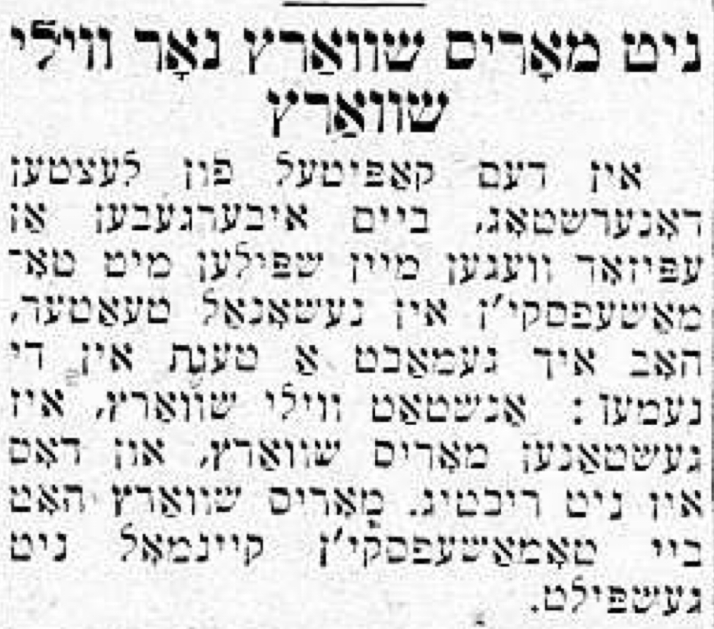

35 January 16th, 1947
Link to Forverts edition
What Kessler could achieve in a role that he really loved. – How he taught other actors to how to perform.
Playing on the same stage with Kessler gave me a great desire to be in better plays which portrayed real life people, and more and more, I began to look at roles differently from how I used to - not only as a chance to do a little song and dance, but also as a chance to create a real life person on the stage.
On this in particular, let me say, that Kessler had the same influence on me as did Mogulesko. Both of them awakened in me the notion that, above all, I should first consider what type of person I wanted to portray in a given role. For me, this became the central goal. And if I didn’t succeed all the time, it was of course not their fault, but mine - or maybe it wasn’t my fault either, because our Yiddish stage often required comedians to do some things that don’t fully match the character they’re playing.
Whenever Kessler played a role that he loved where he could show off his artistry in all its glory, I never missed the chance to see him in it. The whole time we knew each other, our personal relationship was a good one. After the fight we had at the Lyric Theater, we became very close friends. He really listened to me when I told him, on certain occasions, that he he needed to control his temper and not give so much grief to the other actors whose acting he didn’t like.
And just as much as he was sometimes rude to his colleagues, he was also polite and courteous. It seemed to me that he enjoyed being polite more than being rude. But he hated talentlessness. He couldn’t tolerate actors who had no mastery of the craft, and it often made him so angry that he was entirely unable to control himself.
I remember one time when we were rehearsing a play, and I was given a role that Mogulesko had played. I had previously seen Mogulesko in this role, so I tried to imitate him in my acting. I didn’t try to add anything new to the role because, generally, when Mogulesko performed a role, he played it so well that there was nothing more to add. When Kessler asked me if I had ever played the role before, I said no. So, during rehearsals, he started to show me how the role should be played, and I saw straight away that he was following the same model as I was - Mogulesko…
There was no better way to play the role than to play it like Mogulesko did…
But the main point is that in showing me how to play he role, he was very polite about it. When he saw how quickly I caught on, he kvelled and complimented me:
– You are alright, Kasey. You are alright^…1
As particular as he was while showing someone how to play a role, he had nothing more to add beyond how Mogulesko performed it because he knew and felt that nothing more was necessary. There’s just nothing more you can add to what Mogulesko had already perfected. And if you tried to do something differently, it wouldn’t be as good.
He had a great appreciation for Mogulesko’s talent, and he tread very carefully when talking to him. I remember how one time he said something to Mogulesko that Mogulesko did not like, and Mogulesko became very angry and raged back at him:
– Hey you, Dovid’l! Who are you talking to like that? To me?!…
And Kessler immediately apologized:
– Zeligl - he said, putting both hands on Mogulesko’s shoulders - Zeligl, you know, I meant nothing of that kind. Let us forget it…
Kessler loved to speak in English, and he spoke the language very well, but God only knows when he learned it and who taught him. Apparently, the American atmosphere that ruled his home after he married his second wife, the manager Max Wilner’s mother, really helped him to Americanize.
And here, I want to share a story that didn’t happen during the time I’m describing now, but rather a few years later when the peace between Kessler and his step-son Max Wilner was finally destroyed. It got so bad that Kessler left his own theater that was specially built for him on Second Avenue and he started to play with Thomashefsky in the National Theater2.
He was very depressed at that time, and things were not going well for him. Playing in the National Theater where Boris Thomashefsky was the sole manager did not suit him at all. He didn’t think much of Thomashefsky, and he didn’t like having to obey every little thing that Thomashefsky asked of him. He had gotten so used to being his own boss and being able to do everything he felt like. And on top of that, they began to bicker over whose name would be first in the all the announcements and advertisements - Kessler’s or Thomashefsky’s….
They bickered over it for a long time, until they decided that in the newspaper announcements, they would run four lines: two in one issue, and two others in the next issue. The first two lines would read “Boris Thomashefsky and David Kessler,” and the other two lines would read “David Kessler and Boris Thomashefsky”…
You simply can’t make up what happened next. They dealt with the situation by making the advertisements like this - One day Thomashefsky’s name would appear on the first line, and on the next day they’d flip it around and put David Kessler’s name on the first line….

In those times - I believe it must have been 19183 - also played in Thomashefsky’s National Theater, and I remember how when we put on Kalmanowitz’s play Tsvey Khazonim4. Kessler played one khazn5 and Thomashefsky played the other. And not only was Thomashefsky the theater manager, he was also necessarily the director who, naturally, during rehearsals showed everyone how to perform their roles.
There was a scene in the play where one of the two khazonim6 comes home dejected and tells his two sons that he has lost his job. The gaboim7 at the shul didn’t want him anymore - they said that he was too old and could no longer sing. His voice had grown raspy and hoarse and wasn’t like it once was…
One of the khazn’s sons was a simple, uneducated man, but a very good-natured man who loved and was very devoted to his father. And the other sons was educated but hardly good-natured - an egotistical man who always put himself first. I played the role of the good son, and if my memory serves, Maurice Schwartz played the bad son8.
The scene where two sons reacts to their father’s news that he has been laid off is very dramatic. The good son consoles his father, tells him not to worry and reassures him that just like before, he will see to his father’s needs. But the bad son handles it very differently; he becomes angry, and in his rage he loses his temper and hits his brother. Their father intervenes, and such tumult ensues that the two sons leave even more angry at each other, and the poor khazn becomes even more depressed than he was before…
In the rehearsals where Thomashefsky showed us how to perform the scene, Kessler sat there with a sullen look on his face. Smoking a cigar which he held the whole time in the corner of his mouth, he sat quietly, with implacable obstinacy, not saying even one word. But he watched Thomashefsky directing us very closely, and when he heard us fighting in the scene, he started winking at Schwartz9 to say that the scene wasn’t working this way. He made the same sort of grimace that I knew meant that if we played the scene as Thomashefsky had taught us, we’d ruin the whole scene, and our roles too, because…well, because it just wasn’t good!
When Thomashefsky saw how Kessler was cringing, he was a little confused. He turned to Kessler and asked him how to show us how he thought the scene should be played.
– Ah, yes. - Kessler nodded.
And he showed us an entirely different way to perform the scene… He directed us to play the scene without all the noise and tumult. Instead, he showed us a quiet, but still intense and dramatic, scene. He brought in small details to show us that how we played the scene was more important than the words we said. In Kessler’s rendition, after the bad son hits the good son, he immediately realizes that he should not have done that because in doing so he not only insulted his brother, but his father too. He regrets what he did and makes such movements and puts on such an expression that you can see his remorse, but there was nothing he could do about it.
The scene worked really well this way - without all the yelling and screaming, it became very moving. Without using any words, Kessler taught Schwartz and I what to do and how to behave by playing both of our roles - both the good son and the bad son. He did everything in such a supremely artistic manner.
Even Thomashefsky himself had to admit that the scene was better this way and that Kessler was right. And later when we performed the scene for an audience, they confirmed that the scene was very good - every time we played the scene, the audience applauded enthusiastically.
The audiences were also very impressed with how the khazn performed in this scene where he comes home dejected and depressed after losing his job because his voice wasn’t good enough anymore. In order to show his children at home that he should not have been fired, he began to sing, piously and passionately, a prayer from the yomim-nero’im10 - Umipnei Khatoeinu11.
And how beautifully he sang!
All in all, it was the strongest and most dramatic scene in the whole play. Even without all the yelling and the screaming. It was a quiet scene that brought tears to your eyes - a scene where the art of acting was more important than the art of words… David Kessler was able to do this not only because he was a great artist, but because he also had an extraordinary stage presence and mastery of the craft.
Said in English↩︎
Located at 2nd and Houston↩︎
In fact, this specific story took place in the fall of 1919↩︎
The Two Cantors;Sam sang, at least, the song "Yeder Einer Streikt Atzind" in this show. You can find sheet music here and a translation of the lyrics along with a recording here↩︎
cantor↩︎
cantors↩︎
Alas, Sam’s memory does not serve, but he’s close! The bad son was instead played by William Schwartz. In fact, Forverts actually issued a correction to this end immediately after the following week’s article on January 23rd:
↩︎Not Maurice Schwartz but Willy Schwartz
In last Thursday’s article, in relaying an episode from when I played with Thomashefsky in the National Theater, I made an error: I meant Willy Schwartz, not Maurice Schwartz which was not right. Maurice Schwartz never played with Thomashefsky.

Correction issued on January 23rd, 1947. William (“Willy”) Schwartz↩︎
The 10 day period between Rosh Hashanah and Yom Kippur↩︎
A recording from the Warsaw Synagogue Cantor in 1921, and a modern rendition↩︎